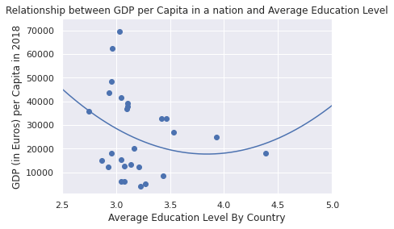

HW1 & HW 2 Building a site and embedding charts
The first chart tracks Covid-19 cases by UK region.
My second chart looks at productivity in the UK
My third chart looks at how populations are declining in different countries
HW3 Hosting Data
My fourth chart looks at the cumulative Covid cases in different parts of the UK (three boroughs in London and the city of Bristol) and was made with an API.
My fifth chart looks at the cumulative number of 2nd Jabs in different parts of the UK (three boroughs in London and the city of Bristol) and was made with a CSV file available in my Repository.
HW4 Editing Data, Writing JSON by Hand
My sixth chart looks at the offer rate of undergraduate applications, with the statistics taken from Save the Student and then written into JSON
My seventh chart looks at the remittances per capita in different nations, with the statistics taken from two separate World Bank data bases (one for gross remittances and the other from population statistics) and then placed in the same CSV file
HW5 API Driven Charts
My eighth chart looks at the incidence of stop and searches by gender in Stratford (a neighbourhood within Newham) in June 2021, using a Met police API
My ninth chart looks number of people over retirement age still working in UK over a number of years, using an ONS API
HW6 Loops and APIs
My tenth chart looks at the unemployment rate in the United States over time using a FRED API
HW7 Loops and Scrapers
My eleventh chart looks at population density of different nations, scraping a table from Wikipedia
HW8 Data Stories
My twelfth chart looks the Balance of Payments of Germany's trade in goods and services over the pandemic. In the discussion on Covid being a global event, the panel member who was discussing the impact of Covid in Europe stated that it had a more significant impact on trade of services (as they were more likely to require some in person interactions) than trade of goods. However, my graph below shows a dip in the value of trade of goods in and out of Germany, while services stay somewhat consistent over the first wave of Covid hitting (2020M3 to 2020M6). However, both see a sharp fall at some point within 2020M3 to 2020M8 and I believe the delay in services decreasing was simply a time lag.
HW9 Advanced Analytics
My thirteenth chart looks at the relationship between average education level from primary (5) to lower secondary (4) to upper secondary (3) to Bachelor or equivalent (2) to Master or equivalent (1) to Docterate or equivalent (0) for each a number of European Nations.
HW10 Interactivity
My fourteenth chart is part of my project and looks at trust in Education in different European Countries in 2018. It is interactive (you can check each nation's exact score by hovering over their bar.
My fifteenth chart is the population of London over time including projections. It is also interactive (you can check the exact population over time).